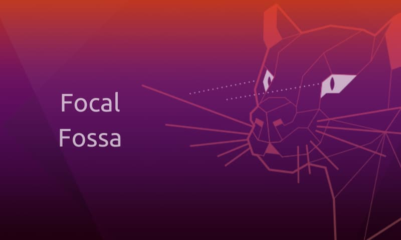
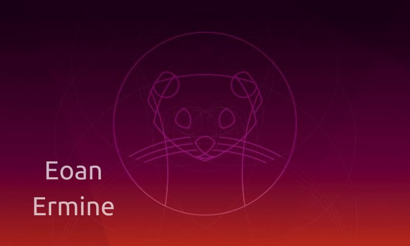
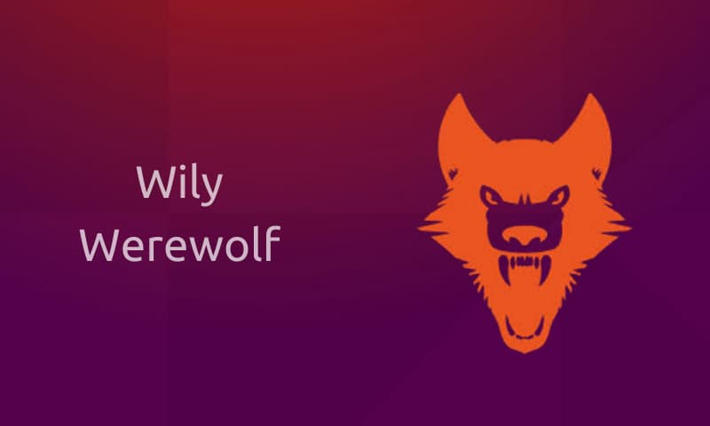
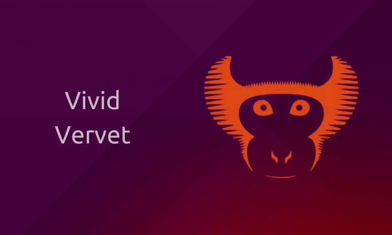
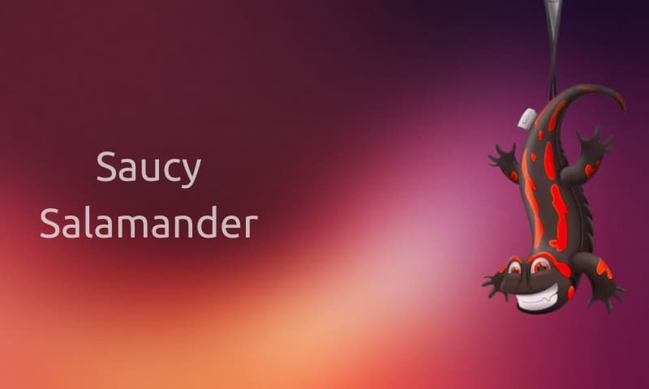
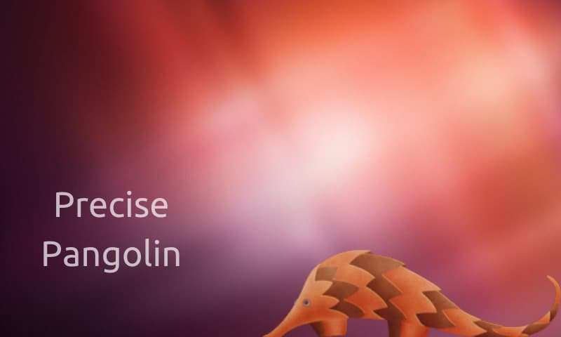
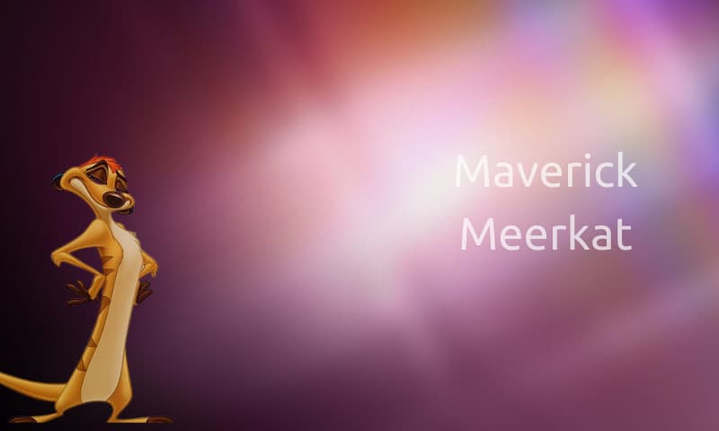
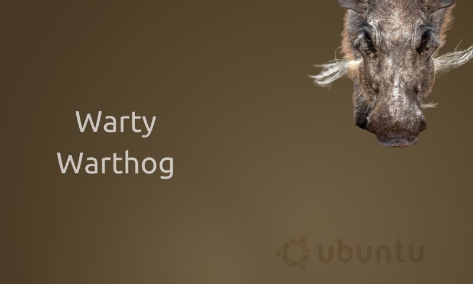

Ubuntu Distros Mascots
Ubuntu 22.04 Jammy Jellyfish
22.04
21.10
21.04
20.10

20.04

19.10
19.04
18.10
18.04
17.10
17.04
16.10
16.04

15.10

15.04
14.10
14.04

13.10
13.04
12.10

12.04
11.10
11.04

10.10
10.04
9.10
9.04
8.10
8.04
7.10
7.04
6.10
6.06
5.10
5.04

4.10